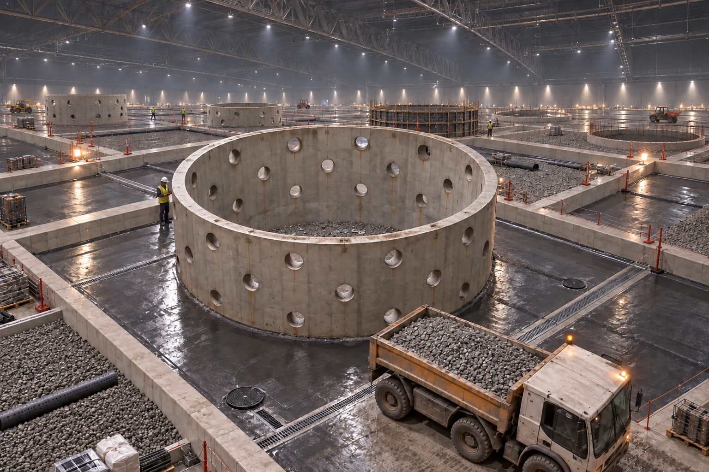

01 · INFRAESTRUCTURA
Un bosque empieza bajo tierra
Antes del paisaje se construyen los grandes alcorques de hormigón que penetran en C2. Sus aberturas permiten la expansión de las raíces y los conectan con una red de drenaje, aireación e inspección.